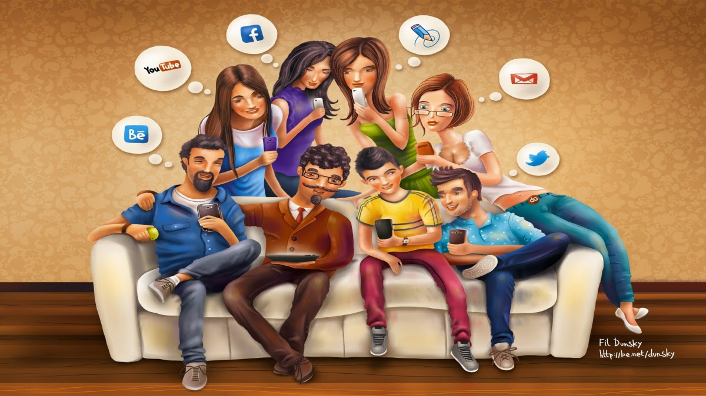

A lógica simples diz: "Onde tem muita farofa é que tem pouca carne".
Trazendo para cá: se a vida digital está extremamente ativa é que a real está uma merda.
Por favor, reflita sobre o texto abaixo. Caso não seja o seu caso, passe para alguém que passa por isso. Adaptei de um vídeo que recebi.
Como em qualquer mensagem, nem tudo tem fundamento mas me parece que muita coisa é útil.

[imagem]
Eu tenho 422 amigos, mas estou só.
Eu já falei com todos eles algum dia, mas nenhum deles me conhece de verdade.
O problema que eu tenho é que eu não posso olhar nos olhos deles, só vejo o nome deles na tela.
Faço uma pausa e olho ao redor, percebo que esta rede à que chamamos "social" é tudo menos social...
Quando abrirmos nossos computadores, é nossas portas que estamos fechando.
Toda essa tecnología que possuimos, é só uma ilusão.
Comunidade, companhia, um sentido de inclusão digital...
Quando você se afasta desse aparelho de ilusão, você acorda e vê um mundo confuso.
Um mundo onde somos escravos da tecnologia que criamos.
Onde a informação, as nossas informações são vendidas, por grandes e inescrupulosas empresa.
Um mundo de interesses, emoções e imagens individualistas.
Onde compartilhamos nossos melhores arquivos, nossas informações, mas deixamos de lado nossas emoções. E nossas informações enriquecem Facebook, Google e outros.
Ficamos felizes quando compartilhamos as experiências, mas estas experiências, não são quase nada sem alguém do nosso lado (mas aqui mesmo, de forma real)!
Estar aí ao lado dos seus amigos, podendo apertar a mão deles, abraçar e perceber as suas emoções mesmo que ele fale ou não fale, isso sim que é estar no presente.
Mas ninguém está atualemnte vivendo o momento presente, pois achamos suficiente uma mensagem que recebemos dos amigos virtuais.
Nós editamos, nós exageramos, nós criamos "relacionamentos". Mas pretendemos não perceber o isolamento social. Tudo isso porque a nossa vida real, lá fora não nos oferece a motivação que esta virtual está oferecendo.
Nós pomos as palavras na ordem que desejamos para ficarem bonitas, mas na verdade nem sabemos se alguém vai lê-las e geralmente nem lê, pois recebemos poucas curtidas, "cutucadas" (ainda bem que estas morreram), comentários e compartilhamentos.
Estar só não é o problema, enfatizo. Quando lemos um livro, desenhamos, ou fazemos algum exercício, estamos presentes no momento e sendo produtivos, não reservados, nem reclusos (será mesmo? Porque então gente extremamente produtiva nunca leu nem escreveu nada. Conhece alguém que nunca escreveu uma linha? Só analfabetos? Pense mais um pouco pois conheço um que foi o que mais influenciou a maneira de pensar de todos os seres humanos e nunca escreveu, conhece?).
Então, quando você estiver ao público, e começar a se sentir sozinho, tire as mãos do seu celular, você não precisa namorar sua lista de contatos, fale com o outro que está ao seu lado, se pergunte porque sua vida real está tão desmotivada que te empurra para o Facebook, será que não é importante para você e para os seus que procure ver o que está erado? Aprenda a viver com os outros e a suportar também seus problemas. Já refletiu porque tanta gente atualmente adota cachorros e gatos ao invés de crianças? Um chute: será que elas conseguem aguentar elas próprias? Será que conseguem se relacionar com gente de verdade? Parece que não, os bichinhos são realmente de mais fácil trato e é até melhor que seja assim mesmo e aqui não fica crítica, mas compreensão para estas pessoas. Que você possa sensibilizar uma pessoa destas para que ela possa primeiro conviver bem consimo mesmo e depois, quem sabe, com outros seres humanos e não precisa abandonar os bichinhos mas tem tanta criança precisando de carinho e sem um lar e nem pais!!!!!
Não aguento escutar o silencio completo do ônibus lotado, pois ninguém fala com ninguém, cada um na sua. Quem está sentado lê (raros), usa seu celular ou não faz nada, mas sem conversa... E nossos visinhos, nós conhecemos, falamos com eles? E nossos familiares, nós nos encontramos realmente com eles, conversamos com eles, vamos às suas casas, aqueles que não moram conosco. Pior ainda, e na nossa casa como é cada um no seu celular, no seu conputador, na sua TV, ou vocês estão sentados na sala um ao lado do outro conversando, falando de como foi seu dia, trocando experiências, ensinando as coisas boas que aprenderam, e alertando para as ruins?
Você já se reuniu com eles, os "seus" e numa reunião acalorada, o calor humano era tanto que você os fez chorar, mas não porque você bateu, humilhou ou os aterrorizou, não, mas porque tocou seus corações com suas palavras bonitas e cheias de amor, os emocionou tanto com os seus próprios, já? Você acreditaria se eu te dissesse que eu já? Pois eu já!
Estamos virando anti-sociais, perdendo a capacidade de nos comprometer pelo outro,
de escutar o outro e ver ele aos olhos, olhando de fato com carinho e interesse.
Estamos rodeados de crianças que desde que nasceram, vivem igual robôs e acham que é essa a norma, pois nós também somos assim e as ensinamos.
Com meus amigos com filhos, vejo que é quase impossível entreter uma criança...
se não usar um ipad....
Quando eu era criança, eu nunca estava em casa, andava de bicicleta, com os amigos, parentes, ou estava em cima das árvores.
Agora os parques estão mais calados, e eu também, não tem mais bicicletas e os balanços estão sem balançar.
Somos uma geração de idiotas: smartphones e gente boba.
Olhe um poquinho acima do seu telefone e desligue a tela. Olhe ao redor, procure tornar seu dia de hoje, o melhor possível.
Uma verdadeira conexão, uma só, poderia te levar a enxergar a diferença que o "estar presente" pode fazer.
Estar no presente, no mundo real, enquanto ela te olha nos olhos, com essa mirada que você lembrará para sempre.
Como quando o amor bate... os sorrisos, os beijos, as brigas e coisas chatas também, diferente do Facebook, onde só vemos frases bonitas e perfeitas.
Você não tem que compartilhar publicamente tudo o que faz, pois é só com ela, com quem quer verdadeiramente ESTAR...
O momento em que chega a vender o seu computador para poder comprar um anel para a mulher de seus sonhos, este é que é o momento real...
O momento em que você quer começar uma família....
O momento em que você segura sua primeira filha e se apaixona de novo,
O momento em que ela te acorda quando a única coisa que você quer é descansar,
O momento quando você enxuga as lagrimas quando sua bebê voa do ninho (casou),
O momento em que sua filha volta com seu neto para você abraçar,
O momento em que te chama vovô e te faz sentir velho mas importante,
O momento em que você olha para atrás e fica feliz de ter estado no momento, de não ter jogado fora o tempo da sua vida olhando pra abaixo para baixo (celular) ou para a frente (computador) através de uma invenção humana.
O momento em que você segura a mão da sua esposa sentado do lado da cama, fala um te amo, lhe beija a testa,
O momento em que ela responde que foi afortunada de ter sido abordada na rua por um estranho te perguntando um endereço...
Mas isso tudo não aconteceu ainda, você ainda não tem nada disso e talvez nunca tenha,
pois quando você está no Facebook, no Whatsap, Instagram, etc, você não olha para todas as oportunidades que você poderia olhar.
Então, tire os olhos do seu celular, do seu computador, olhe para os lados, temos um certo numero fixo de dias de vida e somente eles, não podemos voltar o tempo. Não se deixe absorver inteirametne pela net, pois quando o fim se aproxima, não tem nada pior que o arrependimento.
Eu também sou culpado disso, por ser um post neste aparelho, neste mundo retorcido, onde somos talvez ouvidos, mas nunca vistos e nem tocados de verdade.
Em lugar de falar, usamos o teclado, em lugar de ler, chateamos, e passamos horas juntos, sem nós olhar. Talvez você esteja em casa, com toda sua família, mas cada um em seu celular, computador ou TV. Tá legal, isso? Tudo isso é bom, mas e a nossa vida?
Não viva uma vida seguindo só a onda, não dê só sua curtida à pessoa que você adora.
Desconecte-se da rede, seja ouvido, percebido, olhe ao seu lado, seus pais, seus filhos, sua esposa, esposo, vá lá fora, para o mundo, tá cheio de gente real, com histórias reais precisando muitas vezes de uma palavra, apoio, carinho, uma ajuda qualquer que você está se negando a dar.
Olhe por cima do seu telefone, desliga a tela.
Pare de olhar esse vídeo ou este texto e vá viver a vida real, mas viva intensamente, viva com abundância.
Estes são meus mais sinceros votos, do fundo do coração!
Traduzido por : http://www.yogui.co
Visite nossa página !
Alterações/correções livres de Ribamar FS - http://ribafs.org